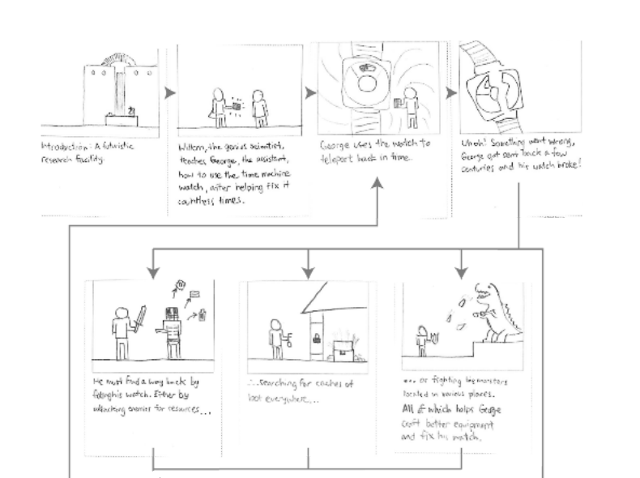
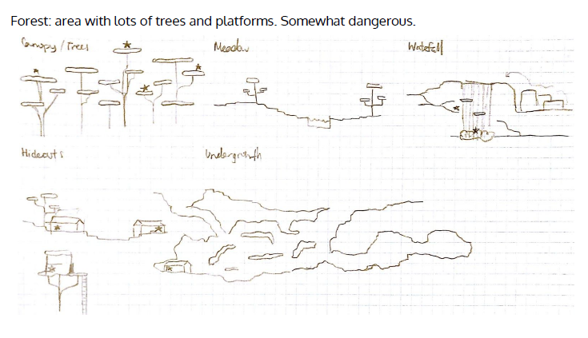
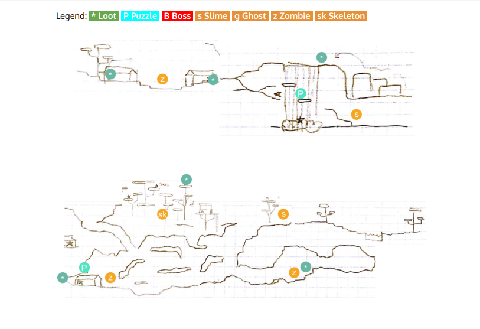
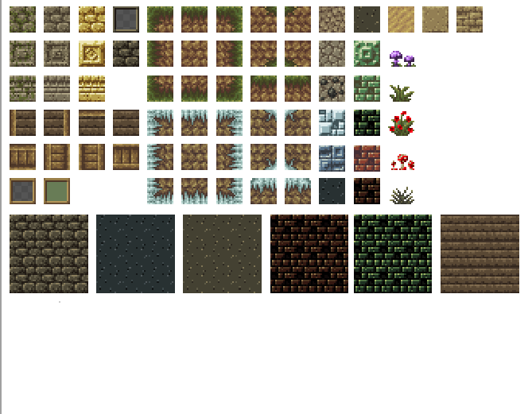
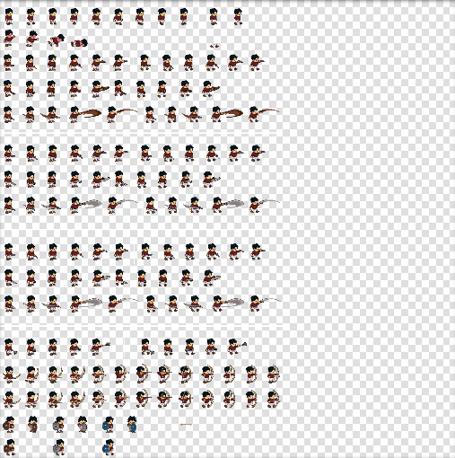

Development Period: Spring 2017
Role: Level Designer, Programming
Team Members: Kam Neuenfeldt, Gilbert Fung, Matt Fraser, Feng Guo
Tools: Unity Game Engine, Piskel Sprite Editor, Photoshop
In an advanced game design course, we were given the freedom to create a game of our liking based on game design theory and concepts we learned over the course of the class. The game had to garner to a particular player type (collecter, explorer, adventurer, or shooter).
From our shared liking of RPG's our group chose to create a unique 2D open world adventure game that would aim to target Killer and Explorer player types where time travel would be a primary game mechanic. We wanted to see how time travel and changing enviroments would alter exploration patterns amongst players.
The concept for Return is you player as an explorer whose accidently been sent back in time by a scientist. Having been given a drained time machine from the scientis, the player must face off against enemies in different time periods and find weapons in order to find sacred time gems that will help power their time machine to get back home.
We began by first establishing how the time travel mechanic would work in game. Due to limited time to develop the game, we found that creating a linear story progression (the player's time machine only has enough engery to move forward by one period per use), that creating the vast environments would be more possible. Gmaeplay would be open exploration, but the goal would be only to time travel in a linear fashion to get back to present time. We then created a story that would center around time travel. We then drew out the different type of biomes that would exist in the world as well as how they would change when travelling through time. We then placed where weapon and time gems would be placed before starting work on art assets. Sprites were created using a pixel art software for the different biomes, chracter animations, UI elements, weapons, enemies and other collectibles. We then put the world together in different fragments before combining them all into one massive world. Next, character controlls were implemented, enemy NPC's where programmed with AI programmed to spawn around and detect players. Time jems and weapons were then placed across the environments before UI elements and sound effects were added. Lastly, we did a series of playtesting to see how players felt about the game and to see if there were any bugs that needed to be fixed or there were balancing issues. The game was then presentedto the class as well several game industry developers.
Due to the sheer amount of art assets that would be required for the game as well as my teammates limited artistic skills, my primary role was creating all the art assets for the game. This includes the different biomes, enemies and player animations, weapons and collectibles. I also designed the crafting, health and time machine UI. I used a gogle pixel art software called Pixel to create all the art assets. In addition to this, I also worked on earlier concept work for the different biomes we planned to be put in the game.
   The primary challenge for me was designing and organizing all the art assets. To limit work and time needed to comple all of this, we used a 16-bit art style to reduce detail needed on sprites. We also decided to use a tiling grid system so that it would be easier to put levels together. Level design required a lot of thought and required a lengthy process in order to build and flesh out a proper level that included puzzles and platforming and places for enemies and loot, especially as a relatively open world for the player to explore.
The final build consisted of three versions of a massive world (based on the different time periods) with enemies, weapons and loot scattered throughout. Due to limited time, we were not able to implement a crafting system we had planned and some enemies were not fully programmed or put in.
Learning how to develop a game within a semester, and actually executing it was a challenging but enriching endeavour. In general, a much greater effort was required than what we expected, so we had to de-prioritize some functionalities we initially planned. For example, procedurally generated tile maps, game AI, and level persistence took a while to get done. Level design required a lot of thought and required a lengthy process in order to build and flesh out a proper level that included puzzles and platforming and places for enemies and loot, especially as a relatively open world for the player to explore. Pacing and rhythm was a challenge as well, since the player might not be playing in any particular order. Art was challenging as well, since our team lacked expertise in creating a artful and cohesive expression of our game. We believe that there is still much to be done in order to make the game more enjoyable and flow better.